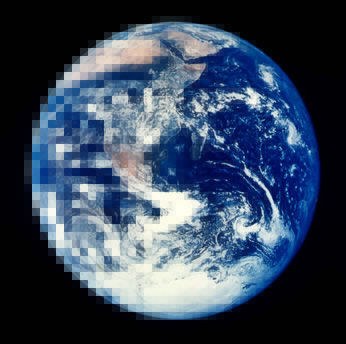

Rodrigo Luger
Astronomer • Graduate student • Not actually left-handed
Github
About
CV
Publications
Email
Everest
K2 lightcurve de-trending
Pysyzygy
Python transit code
Pale Green Dot
Aurorae on Proxima b

VPlanet
The virtual planet
Mirage Earths
M Dwarf water loss
HECs
Habitable evaporated cores